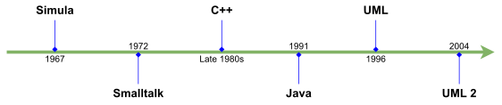
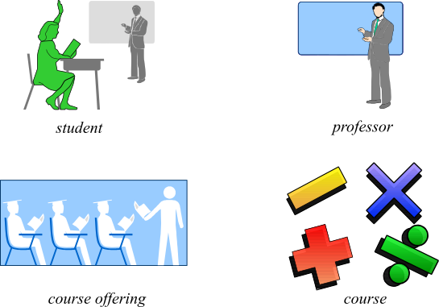
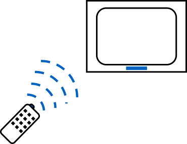
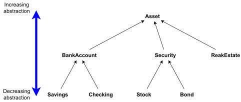

1 INTRODUCTION TO OBJECT-ORIENTED PROGRAMMING
1.1 Introduction
The History of Object Technology
Major object technology milestones

Object-oriented concepts
- Learning OO concepts is not accomplished by learning a specific development method or a set of tools but a way of thinking.
- For examples:
- Many people are introduced to OO concepts via one of these development methods or tools.
- Many C programmers were first introduced to object orientation by migrating directly to C++, before they were even remotely exposed to OO concepts.
- Some software professionals were first introduced to object orientation by presentations that included object models using UML
Problems
- Learning a programming language is an important step, but it is much more important to learn OO concepts first.
- Developers who claim to be C++ programmers are simply C programmers using C++ compilers.
- Learning UML before OO concepts is similar to learning how to read an electrical diagram without first knowing anything about electricity.
- Even worse
- A programmer can use just enough OO features to make a program incomprehensible to OO and non-OO programmers alike.
Problems
Using the data structure struct, implement the following structures
struct Point: data structure for a 2-D point.struct Triangle: contains the information of the 3 vertices
Implement functions:
- A function to calculate a distance between 2 points
- A function to calculate the perimeter of a triangle
- A function to calculate the area of a triangle.
New concepts
- It is very important that while you’re on the road to OO development, you first learn the fundamental OO concepts.
1.2 Procedural vs. OO Programming
Procedural vs. OO Programming
An object is an entity that contains both data and behaviours
- When we look at a person, we see the person as an object.
- And an object is defined by two components: attributes and behaviors.
- A person has attributes, such as eye color, age, height, and so on.
- A person also has behaviors, such as walking, talking, breathing, and so on.
Difference Between OO and Procedural
In OO design, the attributes and behaviors are contained within a single object, whereas in procedural, or structured, design the attributes and behaviors are normally separated.
Limitations of Procedural Programming
- If the data structures change, many functions must also be changed
- Programs that are based on complex function hierarchies are:
- difficult to understand and maintain
- difficult to modify and extend
- easy to break
- In procedural programming:
- Data is separated from the procedures.
- Sometimes it is global \(\to\) easy to modify data that is outside your scope \(\to\) this means that access to data is uncontrolled and unpredictable.
- Having no control over the data testing and debugging are much more difficult.
Why do we change to OO programming?
Objects solve these problems by combining data and behaviours into a complete package.
- Objects contain attributes and methods
- In an object, methods are used to operate on the data.
- We can control access to members of an object (both attributes and methods).
1.3 Four principles of OO
Basic Principles of Object Orientation
- Abstraction
- Encapsulation
- Modularity
- Hierarchy
What Is Abstraction?
- The essential characteristics of an entity that distinguishes it from all other kinds of entities.
- Defines a boundary relative to the perspective of the viewer.
- Is not a concrete manifestation, denotes the ideal essence of something.

What Is Encapsulation?
- Hides implementation from clients \(\to\) Clients depend on interface.

What Is Modularity?
- Breaks up something complex into manageable pieces.
- Helps people understand complex systems.
What Is Hierarchy?
- Elements at the same level of the hierarchy should be at the same level of abstraction.

1.4 Other issues
Software Design
- Reusability
- Portable and independent components can be reused in many systems
- Extensibility
- Support external plug-ins
- Flexibility
- Change will be easy when new data/features added
- Modifications are less likely to break the system
- Localize effect of changes
Create a system: designing process
- Divide a system in terms of components
- Divide components in terms of sub-components
- Abstraction
- Hides details of components that are irrelevant to the current design phase
- Component identification is top-down
- Decompose system into smaller, simple components
- Integration is bottom-up
- Combining small components
- Design is applied using a paradigm: procedural, modular, object oriented
Abstraction
- Procedural design
- Define set of functions to accomplish task
- Pass information from function to function
- Modules (modular design)
- Define modules, where each has data and procedures
- Each module has a public and a private section
- Works as a scoping mechanism
- Classes/Objects (object-oriented design)
- Abstract Data Types
- Divide project in set of cooperating classes
- Each class has a very specific functionality
- Classes can be used to create multiple instances of objects